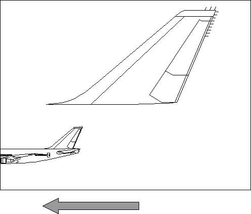

The default viewing window is the same size as the model space. Therefore, to display one or more entire model spaces, draw the picture the required number of times and let the viewing window default each time.
Default viewing transformations scroll or zoom pictures in a window on a display screen. An application can determine the current values for the default viewing transformation by calling GpiQueryDefaultViewMatrix, which returns the default-viewing-transformation values in a one-dimensional array representing elements in MATRIXLF structure. The application can set these values by calling GpiSetDefaultViewMatrix and passing the transformation values in a one-dimensional array representing elements in MATRIXLF structure.
A default viewing transformation is applied when the screen contents are zoomed or scrolled by user interaction. A picture is zoomed when the user wants to increase or decrease the size of an area of interest. A picture is usually scrolled when there is more in the presentation page than can be displayed in a single page of output. Anything lying off the screen, but within the range of the presentation page, can be scrolled into view. The default viewing transformation applies to the entire page coordinate space, and can be added to, or can replace, the current default viewing transformation. The PM applies it after any viewing transformations.
When a presentation page is created, the default viewing transformation is set to identity. For example, if the presentation-page contents are scrolled:
The following figure shows the airplane presentation-page contents scrolled to the left.
Scrolling the Presentation Page
Every presentation-page coordinate is translated to the left by the same amount.
Zooming is implemented in the same way, except that the default viewing transformation is used to scale the picture up or down as required.
If you want to display only one view of a single picture, and if you do not want scrolling and zooming capabilities, you can let the viewing and default viewing transformations default. When both transformations are permitted to default, page coordinate space is effectively the same as model space.